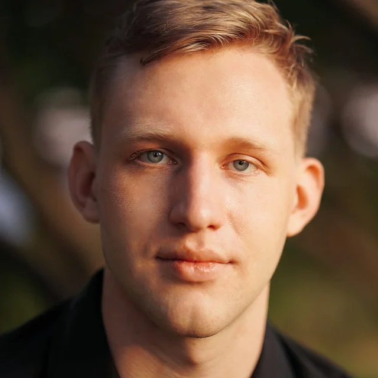
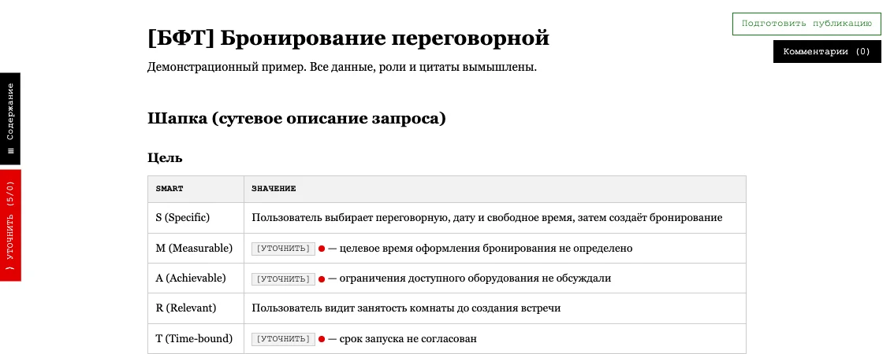
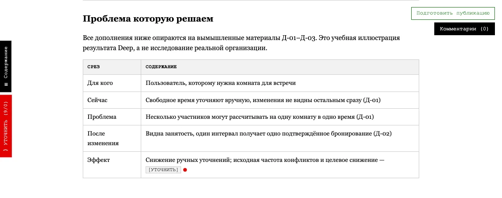
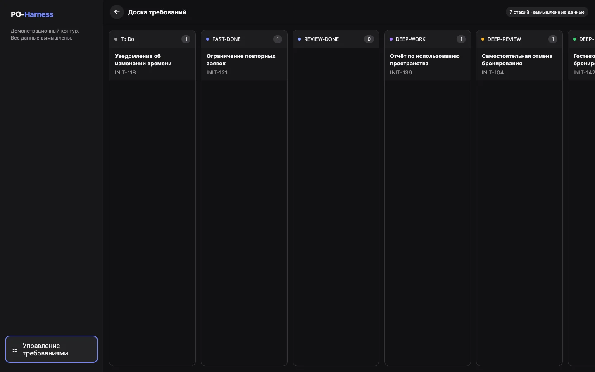

БФТ под управлением
руководителя
Инструмент точечного управления
бизнес-функциональными требованиями
Агент собирает контекст.
Руководитель принимает решения.

aleksishmanov.ru↗Большой IT-ландшафт.
Сбор и границы требований на руководителе
2–5 рабочих дней
Уходят на сбор и согласование одного БФТ.
Контекст у разных людей
Нужно опросить много стейкхолдеров, чтобы собрать полную картину.
Связанные функции
Любая доработка затрагивает соседние процессы и ограничения.
Границы и приёмка
Нужно договориться, что входит в изменение и как проверить результат.
Круги согласований
Переписка и коммуникация занимают больше времени, чем написание.
Две роли одновременно
Нет отдельного аналитика. Быстрые переключения мешают глубокой проработке.
2–5 рабочих дней — оценка автора для исходного процесса.
Наблюдение: 90% информации уже есть
Решения, договорённости и ограничения оставляют цифровой след.
Confluence
Описание процессов, прежние БФТ и бизнес-правила.
Git
История изменений, документация и контекст реализации.
JIRA
Связанные задачи, обсуждения и причины принятых решений.
Договорённости, согласования и уточнения заказчика.
Мессенджеры
Обсуждения, исключения и ответы участников процесса.
Диалоги и отчёты
Транскрибации встреч, результаты исследований и разборов.
90% — наблюдение автора по своему контексту. Источники используются при наличии доступа или выгрузок.
Установите
BFT Writer
Навык собирает бизнес-функциональные требования из диалога и доступного контекста. Начните с установки.
github.com/po-helper-org/poh-bft-writer ↗Два режима работы с требованиями
Зафиксировать сказанное
Транскрибация, диалог и переданные материалы. Требования с цитатами и пометками о пробелах.
Ориентир автора для первого черновика
Проверить в контексте бизнеса
Связанные функции, прошлые решения, ограничения и вопросы по доступным источникам.
Ориентир автора для исследования
Это время работы агента. Проверка человеком и согласование требуют отдельного времени.
Как работает /bft-fast
- Клонируйте репозиторий и установите навык bft-writer.
- Добавьте транскрибацию звонка и полезный контекст.
- Запустите
/bft-fast <источник> <эпик> --no-deep. - Откройте HTML. Проверьте требования и оставьте комментарии.
- Верните промпт с правками агенту и проверьте новую версию.
- После проверки запустите
/bft-deliver <эпик>
для публикации в Confluence и JIRA.
Собери БФТ по транскрибации встречи. Сохрани цитаты-источники. Неизвестное пометь для уточнения. Подготовь HTML для ревью.
Демо Fast-документа

Вымышленный пример: бронирование переговорной. Все данные, роли и цитаты учебные. Интерфейс — из навыка.
Как работает /bft-deep
Запустить Deep
/bft-deep <эпик>
Продолжить работу по проверенному Fast-документу.
Подключить контекст
Агент проверяет доступ к базе знаний, Confluence, JIRA и Git.
Исследовать ландшафт
Связанные функции, прошлые решения, ограничения и противоречия.
Ответить на вопросы
Руководитель уточняет пробелы и подтверждает границы изменения.
Проверить HTML
Открыть полный документ, оставить правки и получить новую версию.
Обновить публикацию
/bft-deliver <эпик>
Обновить Confluence и связи с эпиком JIRA.
Сбор контекста: ориентир автора 15–30 минут. Результат — БФТ и критерии приёмки, без системного дизайна.
Pipeline /bft-deep
Проверить вход
Доступность источников и конфигурацию. Прочитать Fast, зафиксировать исходную шапку.
Поднять контекст
Индекс, вики, трекер, Git и прошлые артефакты. Каждую находку проверить в первоисточнике.
Выявить пробелы
Противоречия, исключения, границы, термины и риски. Вопросы — в диалог с руководителем.
Углубить требования
Ценность для бизнеса, «что если» в приёмке и явные границы доработки.
Собрать и проверить
11 разделов. Типизация, источники и цитаты, валидация и ревью свежим агентом.
Сохранить результат
Полный БФТ и HTML в отдельных файлах. Исходный Fast сохраняется без перезаписи.
Тот же БФТ после Deep

Учебный результат на вымышленных источниках: 11 разделов, приёмка, зависимости, риски и ссылки на основания.
Про UI
AI-Harness
Рабочее место для потока требований:
чат, очередь, доска и документ с правками на месте.
POH Harness: путь требования
Демо PO-Harness

Откройте «Управление требованиями»: очередь → Kanban → карточка БФТ. Главный экран не принимает запросы.